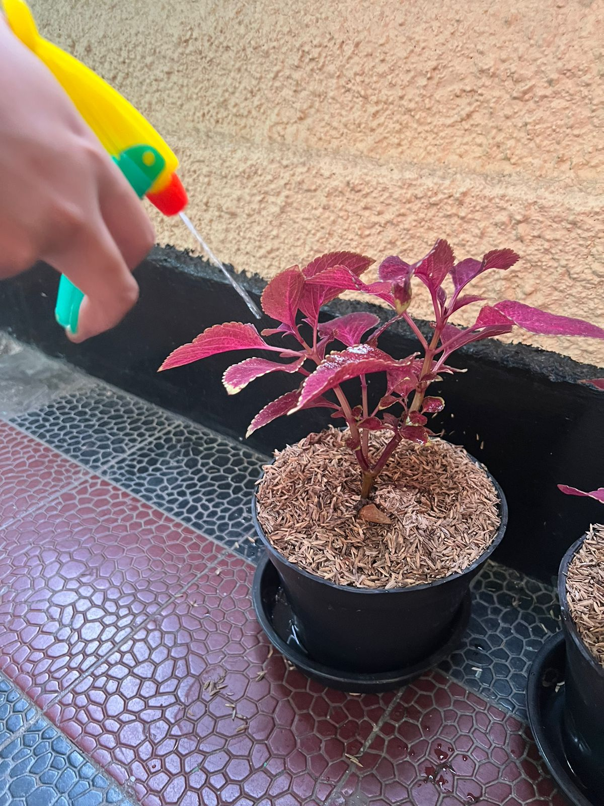

Kami sebagai manusia dan makhluk-makhluk di sekitar kami semua diciptakan oleh Allah. Berdasarkan Kitab Kejadian, semua yang diciptakan oleh Tuhan adalah bagi kelangsungan hidup manusia, serta makhluk-makhluk lainnya. Maka, manusia menjadi bagian dari alam dan alam menjadi hal tak terpisahkan dari manusia. Manusia membutuhkan alam untuk bertahan hidup dan alam juga membutuhkan manusia untuk kelestarian hidupnya.
BAB I
PENDAHULUAN1.1 Latar Belakang
Keadaan lingkungan alam di Indonesia dan di dunia pada zaman ini menjadi masalah yang perlu ditangani sesegera mungkin. Hidup manusia dan makhluk hidup lainnya bergantung pada keadaan lingkungan sekitar. Lingkungan sekitar kami merupakan penyedia udara, air, makanan, tempat berlindung, dan lain-lain. Namun, lingkungan alam Indonesia memiliki banyak masalah. Masalah lingkungannya antara lain polusi, pemanasan global, penipisan lapisan ozon, efek rumah kaca, hujan asam, penipisan sumber daya alam, pembuangan limbah, penggundulan hutan, dan sebagainya. Masalah lingkungan tersebut disebabkan oleh 2 faktor yaitu faktor alam & manusia. Namun, sebagian besar penyebabnya dilakukan oleh manusia. Mulai dari faktor alam, contohnya terdapat perubahan pola iklim mengancam produksi pangan melalui meningkatnya curah hujan yang tidak normal, meningkatnya permukaan air laut kontaminasi persediaan air tawar di pesisir, meningkatnya resiko bencana banjir, dan membuat penyebaran hama dan penyakit tropis ke daerah lain. Polusi merupakan salah satu isu terbesar yang negara kami alami, terutama di Jakarta. Seperti yang sudah dijelaskan sebelumnya, ada juga penyebab dari faktor manusia. Salah satunya adalah penggunaan kendaraan pribadi. Penggunaan kendaraan pribadi yang jumlahnya cukup besar menyebabkan udara di Jakarta tidak sehat untuk dihirup.
Masalah lingkungan yang terjadi di Indonesia tidak hanya polusi udara, tetapi juga ada polusi tanah. Polusi tanah ini bisa disebabkan oleh 2 faktor juga yaitu alam & manusia. Faktor yang menyebabkan polusi tanah ini salah satunya adalah penggunaan pestisida dan pupuk kimia yang berlebih. Selain dari kedua faktor tersebut, pencemaran tanah juga bisa terjadi diakibatkan oleh bencana alam seperti banjir. Pada saat banjir, lapisan unsur hara tanah akan terbawa arus yang menyebabkan tanah tersebut tercemar. Limbah juga termasuk salah satu faktor penyebab pencemaran tanah ini. Contoh limbah yang menyebabkan pencemaran/polusi tanah adalah antara lain limbah organik, limbah anorganik, limbah industri, limbah rumah tangga, dan masih banyak lagi. Manusia cenderung sering membuang limbahnya sembarangan. Disamping itu, penyebab lainnya adalah kegiatan transportasi yang melepaskan emisi kendaraan beracun. Emisi beracun yang dikeluarkan suatu kendaraan, dapat berdampak sangat buruk bagi tanah yang akhirnya bisa tercemar.
Kegiatan menanam dan pertanian masyarakat di Indonesia sangat tinggi akibat luasnya lahan di Indonesia serta iklim yang cocok. Namun, sebagian mereka masih menggunakan pestisida yang sangat berbahaya. Baik itu bagi manusia, maupun fauna di sekitar tanaman. Pestisida dapat membunuh fauna yang ada di sekitar tanaman dan bahkan, pestisida dapat menyebabkan penyakit kritis, seperti kanker pada manusia. Petani sangat rentan dengan penyakit kanker karena mengandung kandungan kimia yang beracun. Buktinya, menurut Biro Penelitian Statistik Amerika Serikat, ternyata petani yang menggunakan pestisida kimia memiliki resiko terkena penyakit kanker lebih tinggi dibanding dengan pekerja industri lainnya. Kanker yang dapat muncul adalah kanker kulit, kanker prostat, leukemia, kanker hati, kanker otak, kanker lambung, dan kanker bibir.
Tidak hanya berbahaya bagi petani dan fauna sekitar, namun pestisida kimia dapat membahayakan warga lain yang ada di dekat lahan tersebut. Mereka juga memiliki potensi terpapar kanker serupa karena air dan produk pertanian yang mereka konsumsi telah terkontaminasi oleh pestisida dan bahan kimia pertanian lainnya. Dari sini, hasil produk pertanian yang menggunakan pestisida kimia juga membahayakan para konsumen. Pestisida kimia juga dapat mencemari udara sekitar. Udara tersebut pastinya terhirup oleh warga lain walaupun mereka tidak terlibat langsung dalam kegiatan pertanian. Bahkan ternyata, residu pertanian dapat menempel pada ruangan.
Dari banyaknya kekurangan dan bahaya dari pestisida kimia, kami pun ingin mencoba untuk mengatasi masalah ini dengan membuat pestisida alami, yang aman bagi lingkungan, manusia dan hewan. Pestisida ini dapat diaplikasikan pada tanaman di lingkungan sekitar rumah, ataupun sekolah. Dengan menggunakan pestisida organik ini, dapat mencegah hama dan juga tanahnya tidak akan tercemar.
1.2 Rumusan Masalah
Sehubungan dengan latar belakang berikut ini masalah yang timbul:
1. Apakah dampak pestisida terhadap tumbuhan dan lingkungan?
2. Mengapa pestisida memiliki dampak tersebut bagi tumbuhan dan lingkungan?
3. Bagaimana efektivitas pestisida organik terhadap pengendalian hama dan pertumbuhan tumbuhan?
1.3 Tujuan Percobaan
Berikut ini adalah tujuan dari penelitian ini:
1. Untuk memahami lebih dalam tentang teknologi ramah lingkungan.
2. Untuk mengurangi kemungkinan pencemaran pada lingkungan maupun racun terhadap manusia dari bahan kimia yang dikandungnya dengan menggantikannya dengan pestisida organik.
3. Untuk memahami efektivitas pestisida organik.
1.4 Ruang Lingkup Masalah
Untuk menjawab persoalan pada rumusan masalah, diperlukan pengkajian beberapa hal:
1. Mengidentifikasi dampak pestisida pada perkembangan tumbuhan.
2. Mengidentifikasi dampak pestisida pada hama dan keadaan tumbuhan.
3. Mengidentifikasi fungsi dari setiap bahan pestisida.
1.5 Hipotesis
Di zaman sekarang ini, masalah pertama dalam menggunakan pestisida dalam pertanian adalah terjadinya keracunan kepada manusia maupun hewan ternak karena penggunaan bahan kimia yang berlebih. Pestisida organik yang kami buat ini diharapkan untuk mengusir hama hewan maupun tumbuhan dengan aman karena saat diaplikasikan, akan membunuh hama saat itu juga dan setelah hamanya mati, residunya akan hilang di alam. Selain mengusir hama hewan maupun tumbuhan, kami juga berharap tanaman yang diaplikasikan pestisida dapat bertambah subur. Apakah pestisida organik akan berhasil menyuburkan dan membasmi hama dengan aman atau akan pestisida organik ini gagal memenuhi ekspektasi kelompok peneliti? Menurut kami, pestisida organik ini akan berhasil menyuburkan tanaman dan juga membasmi hama dengan aman.
1.6 Sumber Data
Dalam penelitian ini, kami menggunakan dua tanaman yang diberikan perlakuan yang sama, dengan salah satu tanaman menggunakan pestisida organik kami, dengan yang satu tanpa pestisida organik. Melalui perkembangan kedua tanaman tersebut, peneliti akan mendapatkan data dari perubahan tanaman.
Kami mendapatkan beberapa sumber data dari internet, secara spesifik dari artikel-artikel. Berikut adalah judul artikel yang kami gunakan sebagai sumber data:
1. Pestisida Menyebabkan Kanker? - MSMB Indonesia
2. Mengenal Pestisida - Kalteng Litbang Pertanian.
3. Pengertian Pestisida Nabati dan Penjelasannya Menurut Ahli - Indonesia Students.
1.7 Metodologi Penelitian
Metode penelitian yang digunakan adalah metode experimental, karena metode eksperimental adalah metode yang berasal dari suatu eksperimen. Dalam laporan ini, kami melakukan eksperimen membuat pestisida alami sebagai bentuk dari Teknologi ramah lingkungan.
1.7.1 Jenis Penelitian
Jenis penelitian yang kami gunakan adalah metode eksperimental kualitatif, yang mencari hubungan sebab akibat dengan memanipulasikan satu atau lebih variabel. Menurut Sugiyono (2012:107), penelitian eksperimental dapat diartikan sebagai metode penelitian yang digunakan untuk mencari pengaruh perlakuan tertentu terhadap yang lain dalam kondisi yang terkendalikan. Salah satu variabel yang diberi perlakuan dibandingkan dengan satu atau lebih variabel pembanding yang tidak menerima perlakuan.
Pendekatan kualitatif menurut Moleong (2017:6), penelitian kualitatif adalah penelitian yang bermaksud untuk memahami fenomena tentang apa yang dialami oleh subjek penelitian seperti perilaku, persepsi, motivasi, tindakan dan lain-lain secara holistik dan dengan cara deskripsi dalam bentuk kata-kata dan bahasa, pada suatu konteks khusus yang alamiah dengan memanfaatkan berbagai metode Alamiah. Dua tanaman A (menggunakan pestisida) dan tanaman B (tidak menggunakan pestisida) sudah diberikan perlakuan yang sama, kecuali pestisida selama 4 minggu. Dalam metode eksperimental kualitatif, kedua tanaman tersebut akan diamati perubahannya, dan perbedaannya akan menjawab apabila pestisida organik dapat meningkatkan kualitas tanaman dengan aman.
1.7.2 Tempat dan Waktu Penelitian
Tempat penelitian yang dipilih dan digunakan dalam penelitian ini adalah lingkungan Sekolah Menengah Pertama Santa Ursula Jakarta yang berlokasi di Jalan Pos No. 2, Pasar Baru, Jakarta Pusat. Tepatnya di lapangan Lourdes, bagian sudut bersebelahan dengan tempat cuci tangan. Dua tanaman diletakkan di sudut tersebut, dengan sinar matahari yang memadai untuk pertumbuhan tanaman. Perkembangan tanaman akan dilihat setiap hari, dengan pestisida serta air untuk pertumbuhan tanaman. Peneliti melakukan pengumpulan data selama 4 minggu, dimulai dari tanggal 24 Januari s.d. 15 Februari 2023.
Playlist - !!
Guess what we made to accompany you scrolling through our report! Yes, we made a playlist full of our top picks!
Gallery -!!


